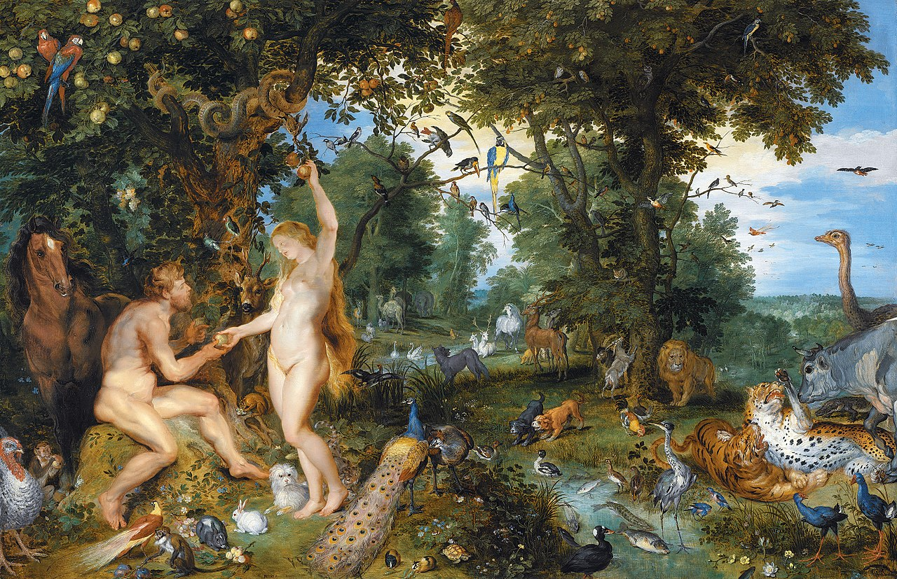

(from dust to mud and back again)

In the Genesis myth, the Garden of Eden is an inherently queer space. It is pre-bio/logic: with no reproduction or death. In this space, Adam and Eve exist as queer figures,
having sex for the sole purpose of pleasure. It is only when the original sin is committed that this queer space collapses and the bio/logic order is imposed by God.
Adam and Eve are given two commandments: to reproduce and populate the Earth, and to never consume the fruit of the tree of knowledge. These two commandments are in conflict,
and one must be violated.
Transgression is a violation of bio/logic law. Sex for the purpose of pleasure is transgression. Murder is transgression. Generally laws and social conventions closely align with
those of bio/logics. Queerness is transgressive, but transgression isn't inherently queer. Like Adam and Eve, queer bodies are given two contradictory commandments: assimilate and
stay away. It is for this reason that queerness is inherently transgressive. These commandments cannot be followed, and every single queer person realizes at some point that they
must bring about the fall in order to reconcile bio/logic demands.